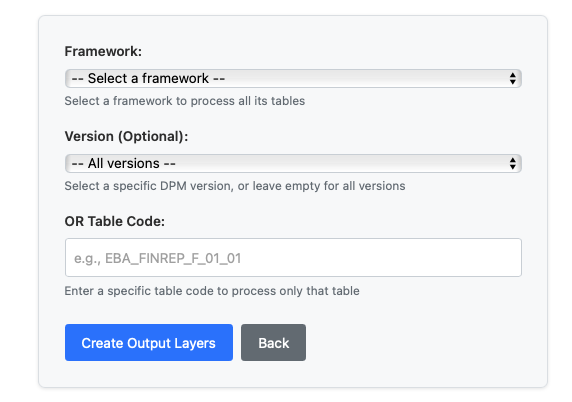

DPM (Data Point Model) Operations provides a 3-step workflow for processing regulatory data according to European Banking Authority (EBA) standards.
Access DPM Operations
To access DPM Operations, launch the FreeBIRD Application, navigate to the Home page, and click on "DPM Data Operations". You will then follow a 3-step sequential process.

3-Step DPM Workflow
The DPM workflow consists of three sequential steps that must be executed in order: Prepare, Import, and Create Output Layers.
Step 1: Prepare DPM Data
Click the "Prepare DPM Data" card to validate and stage your source data for processing. This step ensures your data meets all requirements before moving to the import phase. The system will validate your source data and confirm it is ready for import.
Step 2: Import DPM Data
Click the "Import DPM Data" card to process your source data and apply the necessary transformations. During this step, the system imports your data into DPM structures while performing validation checks. Once complete, your data will be properly structured according to DPM specifications.
Step 3: Create Output Layers
Click the "Create Output Layers" card to generate your final regulatory reporting outputs. This step produces all required regulatory reports that are ready for submission to authorities.

When creating output layers, you need to select your regulatory framework such as COREP, FINREP, or LCR. Then choose the specific version of your selected framework. You can also pick specific table codes if you want targeted output generation. After making your selections, the system will generate regulatory reports in the required smcube format, and your selected outputs will be ready for integration.
Best Practices
Always execute the three steps in sequential order: Prepare, then Import, then Create Output Layers. Complete each step fully before proceeding to the next one. Address any data quality issues during the Prepare step before attempting to import. Monitor validation error rates during the Import process to catch issues early. Verify that your final outputs comply with EBA standards before submission.
Troubleshooting
If your data preparation fails, check that your file formats and encoding are correct, verify that all required data elements are present, and review the preparation logs for specific error messages. When encountering import errors, confirm that the preparation step completed successfully, check your transformation rule configurations, and analyze exception reports for patterns. If output generation fails, verify that the import completed successfully, check your output template configurations, and review the calculation rules and logic for accuracy.